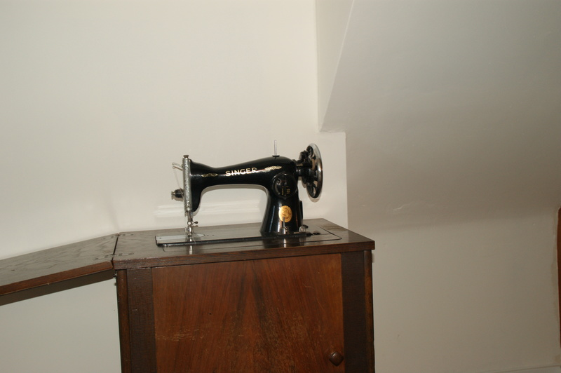
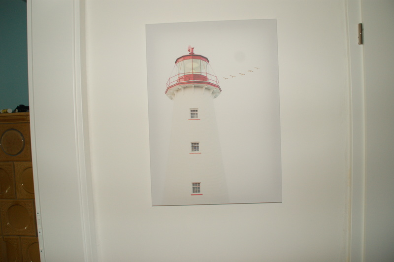
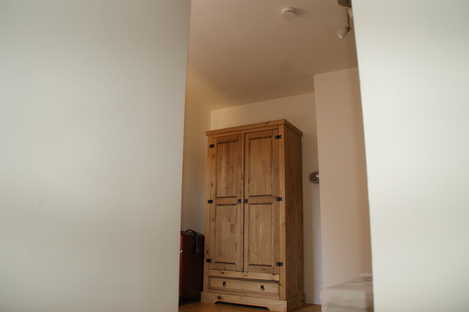
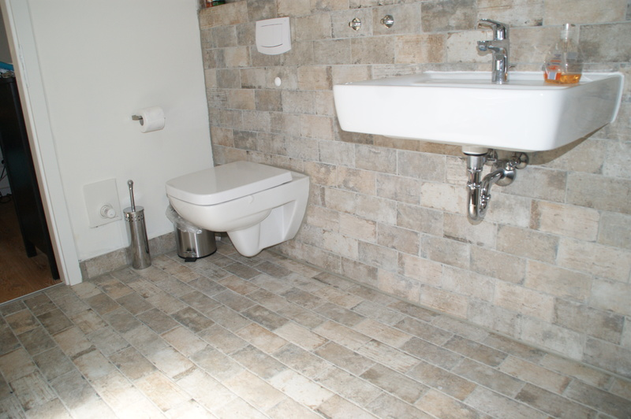
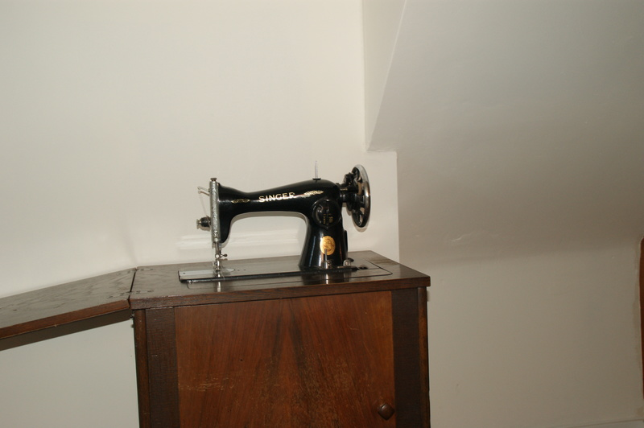
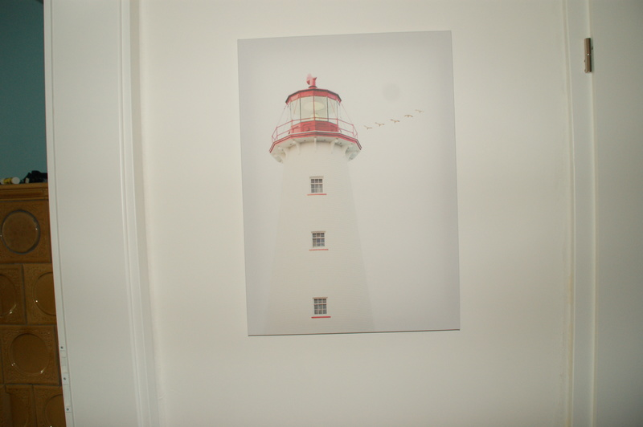
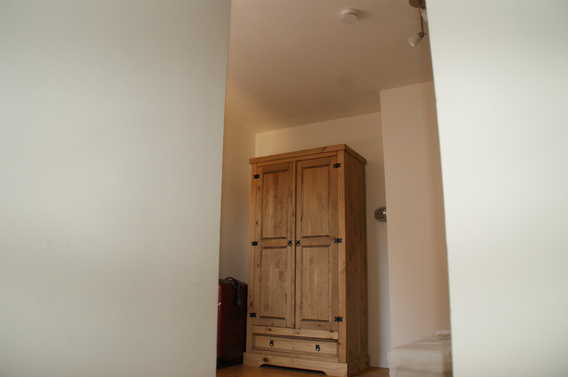
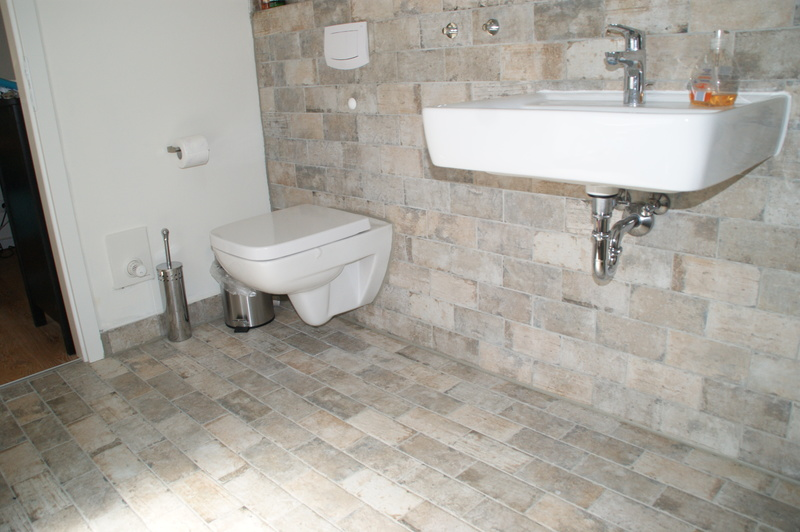


 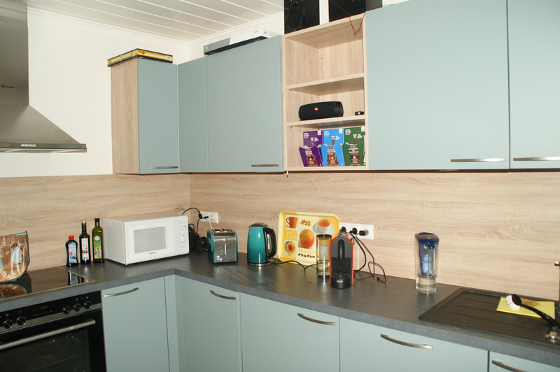
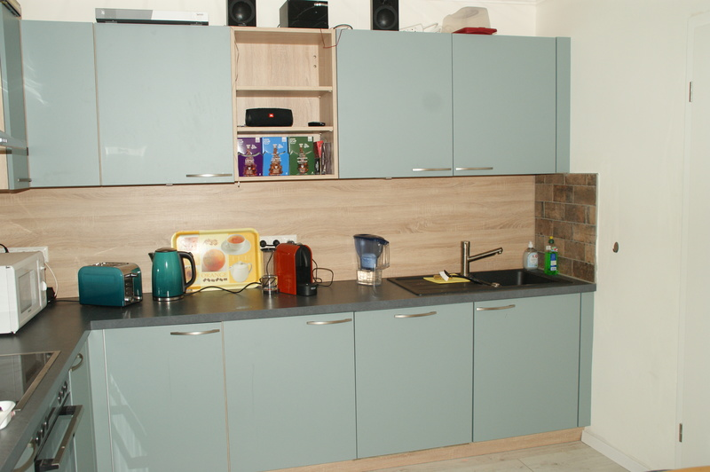
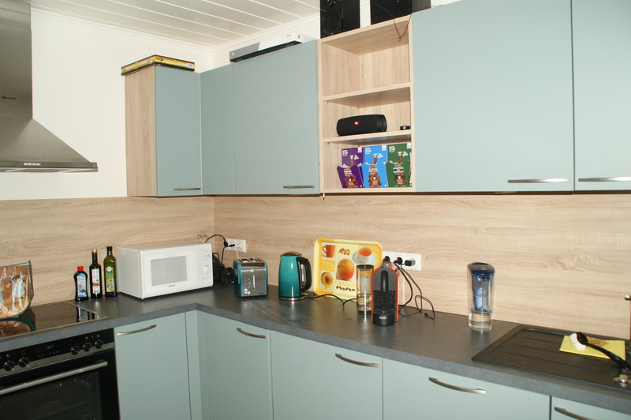
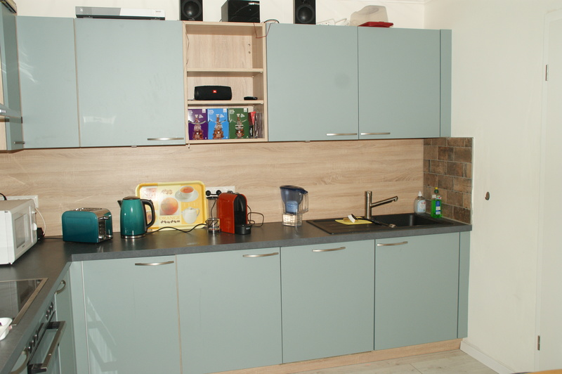


 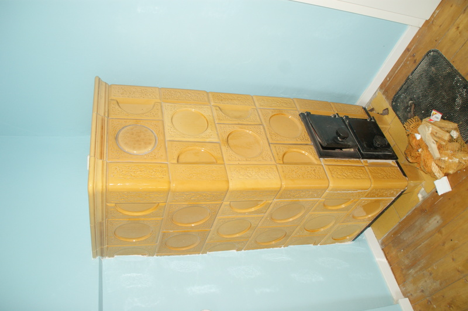
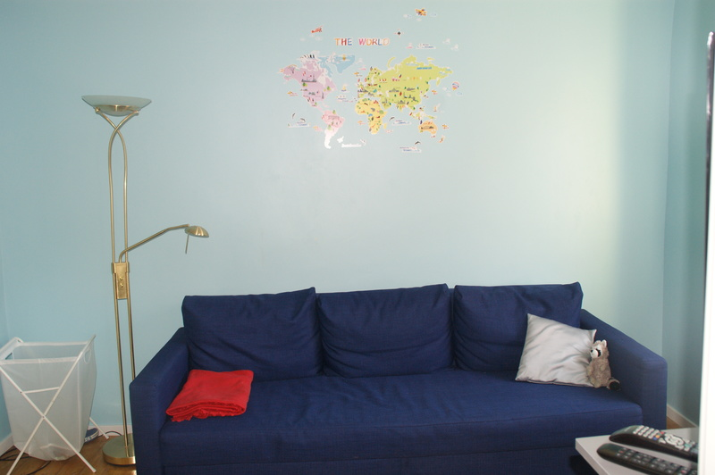
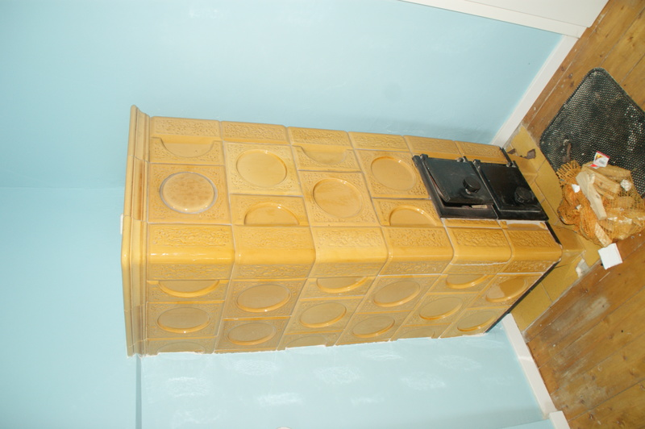
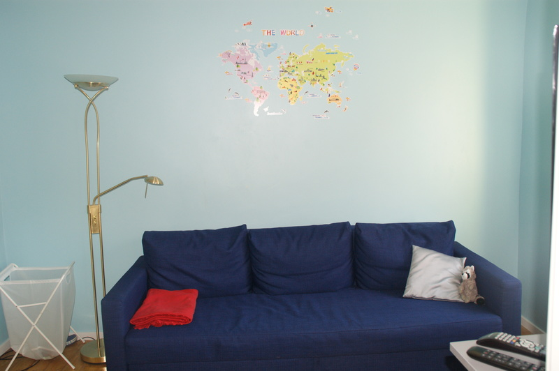
 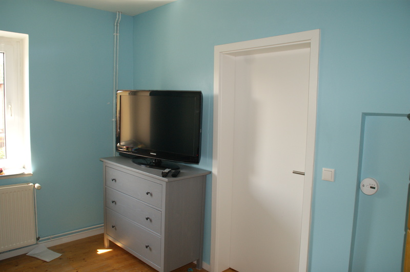
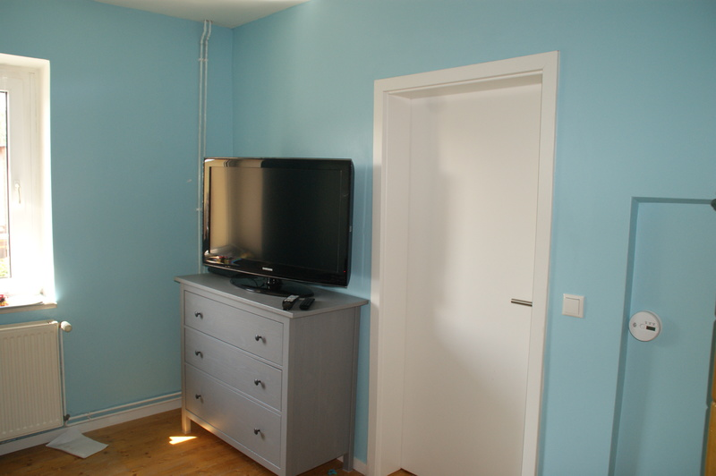

FERIENHAUS
Das schöne alte Fachwerkhaus im Herzen von Barth liegt direkt unterhalb des Adligen Fraunstiftes und ist um 1875 erbaut. Das Haus besitzt 3 Stockwerke und verfügt über eine Wohnfläche von ca 120 m2 und teilt sich wie folgt auf.
- Im EG befindet sich ein schönes Wohnzimmer mit Kachelofen. Über den Flur gelangt man zum einen zum Hof und zur Küche. Die Küche ist eine vollausgestatte Einbauküche mit Einbauherd mit Cerankochfled, Spülmaschine und großem Kühlschrank mit Gefrierfach. An die Küche schließt sich ein Duschbad an in dem Sie auch eine Waschmaschine finden.
- Über die Treppe im Flur gelangen Sie in den 1. Stock. Dort finden Sie den geräumigen Master Bedroom mit großem Ensuite Bad sowie ein Berliner Zimmer mit eigenem Fernseher sowie das Kinderschlafzimmer. Diese beiden Zimmer haben ebenfalls einen Kachelofen.
- Im 2. OG befindet sich ein weiteres Schlafzimmer und das 3 Bad mit Badewanne.
- Das gesamte Haus wurde in den letzten Jahren kontinuierlich renoviert und in 2020 wurde das komplette Haus, bis auf das Duschbad im EG kernsaniert und 2 neue Bäder eingebaut.
- Die moderne Heizungsanlage wird über Smart Geräte gesteuert.
- Darüber hinaus verfügt das Haus über ein 100 DSL Leitung sowie Sky und Disney Plus.
- Der Hof wird noch dieses Jahr noch neu gestaltet und lädt bereits jetzt zum verweilen und grillen ein.
- Das Haus ist ein Nichtraucher Haus und es darf gerne im Hof geraucht werden. Darüber hinaus sind Hunde auf Anfrage gestattet.